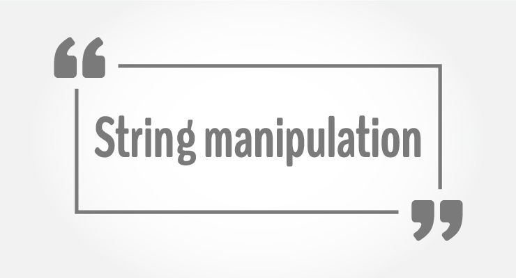

In this article, you'll learn to manipulate strings in C using library functions such as gets(), puts, strlen() and more. You'll learn to get string from the user and perform operations on the string.

You need to often manipulate strings according to the need of a problem. Most, if not all, of the time string manipulation can be done manually but, this makes programming complex and large.
To solve this, C supports a large number of string handling functions in the standard library"string.h".
Few commonly used string handling functions are discussed below:
| Function | Work of Function |
|---|---|
| strlen() | Calculates the length of string |
| strcpy() | Copies a string to another string |
| strcat() | Concatenates(joins) two strings |
| strcmp() | Compares two string |
| strlwr() | Converts string to lowercase |
| strupr() | Converts string to uppercase |
Strings handling functions are defined under "string.h" header file.
#include <string.h>
Note: You have to include the code below to run string handling functions.
Functions gets() and puts() are two string functions to take string input from the user and display it respectively.
#include<stdio.h>
int main()
{
char name[30];
printf("Enter name: ");
gets(name); //Function to read string from user.
printf("Name: ");
puts(name); //Function to display string.
return 0;
}
Note: Though, gets() and puts() function handle strings, both these functions are defined in "stdio.h" header file.